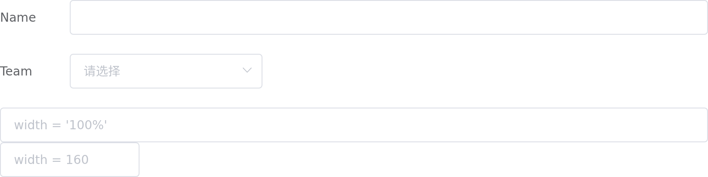

Element’s form components each report to
input$<id> and are set from the server with
update_el_*(). This covers the pieces that differ from what
you would write with Shiny’s own inputs. Every example runs as it
stands, and the picture under it was taken from that code.
Choices
Anything taking choices accepts the shapes Shiny does –
an unnamed vector, where value and label are the same; a named one,
label = value; or a list of objects, which is how a single choice
carries props of its own.
el_select("plain", choices = c("Beijing", "Shanghai"), value = "Beijing")
el_select("named", choices = c(Beijing = "bj", Shanghai = "sh"), value = "sh")
el_select("objects", value = "sh", choices = list(
list(value = "bj", label = "Beijing (full)", disabled = TRUE),
list(value = "sh", label = "Shanghai")
))For a checkbox or radio group, Element documents border,
name and disabled on the individual item
rather than the group, so they go on the choice:
el_checkbox_group("terms", selected = "a", choices = list(
list(value = "a", label = "Agree", border = TRUE),
list(value = "b", label = "Subscribe", border = TRUE),
list(value = "c", label = "Unavailable", border = TRUE, disabled = TRUE)
))Validation
el_form() renders its own fields rather than accepting
standalone input components, because Element’s validation only works
inside one component tree: a form item finds its control through Vue’s
child chain and listens for events dispatched up it. A separate Vue
instance dropped in is not in that chain.
The form reports three inputs: input$<id> is the
model as a list, input$<id>_valid whether validation
passed, and input$<id>_submit a counter. Here the
form was submitted empty:
ui <- el_page(
el_form(
id = "signup", label_width = "90px",
el_form_field("name", "input", label = "Name",
rules = el_rule(required = TRUE, message = "Name is required")),
el_form_field("age", "input-number", label = "Age", value = 18),
el_form_field("city", "select", label = "City",
options = c("Beijing", "Shanghai"),
rules = el_rule(required = TRUE, message = "Pick a city"))
),
verbatimTextOutput("result")
)
server <- function(input, output, session) {
output$result <- renderPrint({
req(input$signup_submit)
list(valid = input$signup_valid, model = input$signup)
})
}
shinyApp(ui, server)
Validation can be driven from the server as well.
validate() returns a promise, which resolves when the form
is valid and rejects when it is not; both arrive as
input$<id>_validate:
ui <- el_page(
el_form(
id = "profile", submit_label = NULL,
el_form_field("email", "input", label = "Email",
rules = el_rule(required = TRUE, message = "Email is required"))
),
el_button("check", "Check from the server"),
el_button("clear", "Clear messages"),
verbatimTextOutput("answer")
)
server <- function(input, output, session) {
observeEvent(input$check, el_call(session, "profile", "validate"))
observeEvent(input$clear, el_call(session, "profile", "clearValidate"))
output$answer <- renderPrint(input$profile_validate)
}
shinyApp(ui, server)
Uploads
el_upload() sends files through Shiny’s own upload
transport by default, so they arrive in input$<id> as
the data.frame fileInput() gives: name,
size, type, datapath.
ui <- el_page(
el_upload("docs", label = "Choose CSV files", multiple = TRUE, accept = ".csv",
tip = "CSV only, up to 5 MB"),
tableOutput("files")
)
server <- function(input, output, session) {
output$files <- renderTable(input$docs[, c("name", "size")])
}
shinyApp(ui, server)
drag = TRUE gives the drop zone instead of a button:
el_upload("photos", label = "Drop images here, or click to choose",
drag = TRUE, accept = "image/*")Pointing action elsewhere switches to Element’s own
transport, and the file goes straight to that URL without reaching R.
extra_data is Element’s data prop, renamed so
it is not confused with the file itself.
Autocomplete
Suggestions passed up front are filtered in the browser as the user types:
el_autocomplete("city", placeholder = "Where to?", width = 260,
suggestions = c("Beijing", "Shanghai", "Shenzhen", "Chengdu"))When the list lives on the server – a database, an API – update the suggestions from what has been typed:
cities <- c("Beijing", "Baoding", "Baotou", "Shanghai", "Shenzhen", "Chengdu")
ui <- el_page(el_autocomplete("city", placeholder = "Type a city", width = 260))
server <- function(input, output, session) {
observeEvent(input$city, {
typed <- tolower(input$city)
update_el_autocomplete(session, "city",
suggestions = cities[startsWith(tolower(cities), typed)])
}, ignoreNULL = FALSE)
}
shinyApp(ui, server)
Transfer
el_transfer() takes a data.frame of key and
label, and reports the keys on the right – here driving
which columns a table shows:
ui <- el_page(
el_transfer("cols",
data = data.frame(key = names(iris), label = names(iris)),
value = c("Species", "Sepal.Length"),
titles = c("Available", "Shown"),
filterable = TRUE),
tableOutput("preview")
)
server <- function(input, output, session) {
output$preview <- renderTable(head(iris[, input$cols, drop = FALSE], 3))
}
shinyApp(ui, server)
Sizing and layout
Every component takes width, which behaves like the
width of a Shiny input: "200px",
"50%", or a number meaning pixels. For a form,
label_width and label_position do what
Element’s do:
el_form(
id = "compact", label_width = "80px", label_position = "left",
submit_label = NULL,
el_form_field("name", "input", label = "Name"),
el_form_field("team", "select", label = "Team", options = c("Data", "Design"))
)
el_input("wide", placeholder = "width = '100%'", width = "100%")
el_input("narrow", placeholder = "width = 160", width = 160)